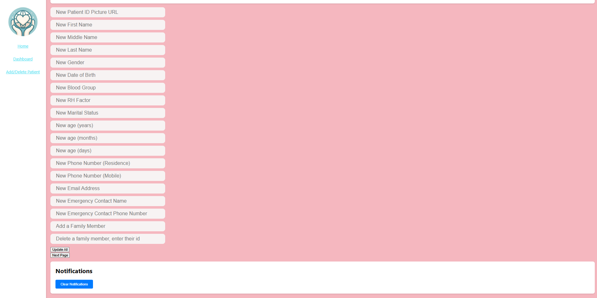
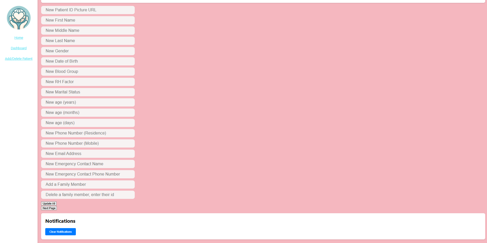

Hunger Games Simulator
I made a text- and image-based simulation that allows users to recreate the Hunger Games in their browser,
developed with HTML, CSS, and JavaScript as languages, React as a framework, and GitHub Pages for deployment.
This began as a personal project, but I decided to update and publicise it so others could try it out.
It's original purpose was to entertain myself, but now others can join in on the fun.
You can check out my project here:
Cherrow's Hunger Games Simulator
Cherrow is one of the usernames I use to stay anonymous online.
The Hunger Games is a popular trilogy of novels written by Suzanne Collins, where contestents (tributes) fight in a large arena
full of treacherous terrain, until only one is left standing.
Inspiration for this project began while I was playing with a Hunger Game simulator hosted at brantsteele.net.
It puts 24 tributes in an arena and they participate in randomized events, until a winner is chosen.
Here is a link to the original simulator created by the Brantsteele staff:
Brantsteele's Hunger Games Simulator.
It's one of my favorite websites, but I didn't like how some features were designed:
- Creating my own custom events that occur during the simulation is extremely difficult
- Editing or removing preexisting events is cumbersome
- Events that occur during the simulation don't impact future events at all
- When tributes find items, it has absolutely no impact on the simulation
- Tributes are always eliminated in one hit, making the simulation less interesting
- I wish there was some sort of storyline for each simulation
- Editing tributes can be confusing for new users
To solve these problems, I decided to customize and expand their simulator by recreating it from scratch.
Here is what the homepage looks like:

24 tributes compete in the Hunger Games, with 2 characters in each of the 12 districts.
A common misconception is that tributes in the same districts are always teammates, but this isn't true because there can only be one winner.
My simulator's appearance is similar to Brantsteele's style, but mine is a lot more simplistic.
The middle of the website displays every tribute's name and profile picture.
Users can edit these through the use of the white input boxes found at the bottom of the website.
Next to the input boxes, users can read a full tutorial on how to use my website, and how it works internally.
Near the top left corner, there is a reset button.
When pressed, all tribute names and profile pictures are reset to the default ones I have provided.
Underneath the grid of tributes, there is a proceed button that begins the simulation.
Here is an example of what the simulation could look like:


Tributes participate in randomly chosen events until only one is left standing.
A tribute is eliminated when their health drops to 0.
Tributes have an attack stat, which determines how much health they can remove from others.
There are many different kinds of events, and most of them will change the outcomes of future events.
Some events that do nothing, increasing the randomness of the simulation.
Here are some examples:
- Two tributes fight and one tribute hurts the other
- A tribute finds a weapon, it increases their attack
- A tribute finds supplies, it increases their health
- One tribute steals from another's belongings, lowering the victim's damage
- A tribute sleeps, and nothing happens
My website is not perfect, and there are many limitations.
I didn't want to spend money on hosting my website, so I learned how to deploy it for free on GitHub Pages.
However, GitHub Pages only hosts static websites for free, so I am unable to allow users to store their custom tributes' information.
Users must recreate their custom tributes every time they reload or come back to my website.
In addition, users aren't able to create their own events, or edit the default ones.
Originally, I designed my website without the intentions of letting other people use it, so I have not implemented the ability for
users to edit events without changing the source code.
In the future, I might add this feature.
I faced many challenges while developing this project.
One issue I faced was figuring out how to minimize violence without taking away from the user's experience.
The Hunger Game novels are violent, so it was difficult finding a balance between reducing violence and recreating the conflict that makes the books popular.
In fact, I am only showcasing the second version of my simulation.
The first version is too violent, so I had to rewrite a large amount of code.
However, I wanted to keep the first version intact, and you can see it by clicking this link. Viewer discretion advised:
Cherrow's Hunger Games Version 1.
Another issue I faced was concealing my identity online.
Projects hosted on Github Pages are open source, so anyone can read the source code and find who the author is.
I shared my project with many strangers online, and I don't want my personal information to be known.
I decided to create multiple GitHub accounts to stay anonymous, although managing multiple accounts can get complicated.


 
